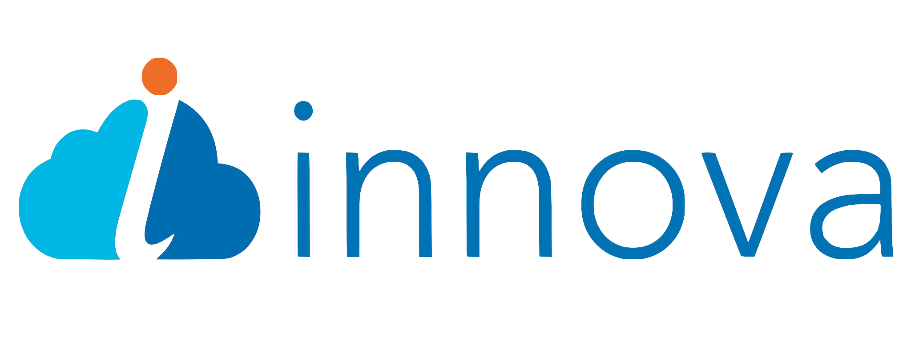
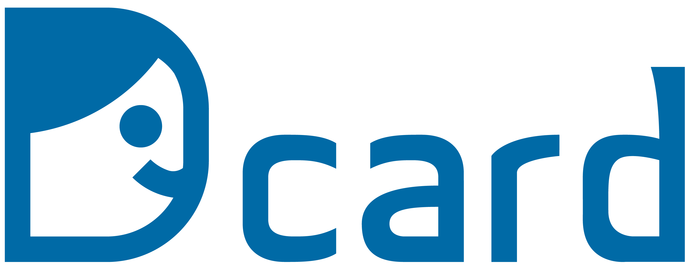
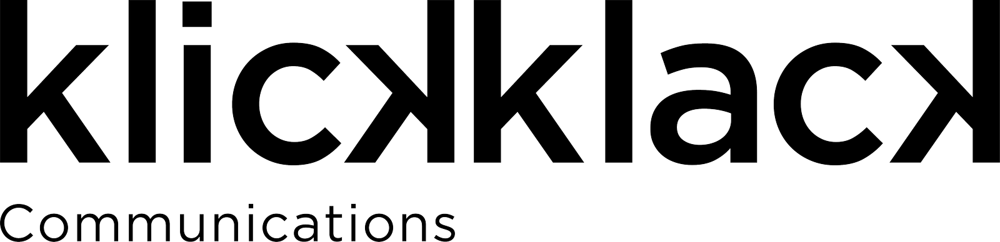
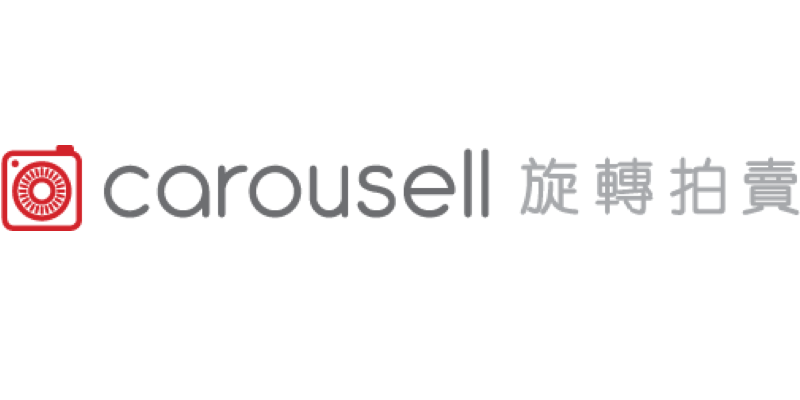
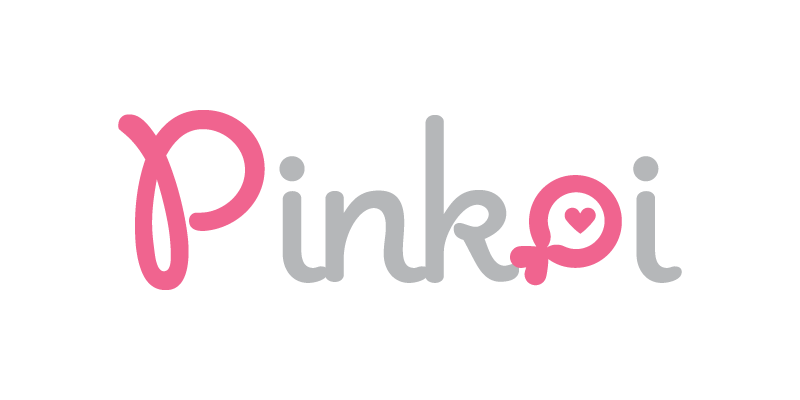

首頁
關於我們
會場
講者
議程
合作夥伴
徵才
金級

英諾瓦資訊科技服務有限公司(Innova Solutions Taiwan, LTD.)，是美商英諾瓦為全美最大醫療支付系統公司──「Change Healthcare」(https://www.changehealthcare.com/)成立的首座海外軟體研發中心。 從2016年中開始 座落於台北內湖科技園區，鎖定台灣軟體開發人才潛力以及政府重點發展策略藍圖，以替軟體工程師量身打造最理想的工作環境為願景，全速發展。
「接軌最新科技、傳遞科技價值」──總部位在美國矽谷的英諾瓦，深信軟體業的發展價值、致力於集結資訊科技之頂尖人才，讓企業跳脫既有的產品服務模式。因而吸引美國醫療支付巨擘Change Healthcare成為合作客戶，協助在台成立目標規模500人以上之企業級軟體研發中心。
有別於台灣健保體系，美國醫療支付的關係界於醫院、藥房、患者、保險公司間，眾多整合醫療支付系統相關的公司應運而生，其產值高達20%美國國內生產毛額。年營業額32億美元的Change Healthcare市佔率近70%，為首家雲端化醫療支付系統公司、更是其中規模之最。每日交易筆數高達數億次，可想見其資訊流量之龐大和雲端平台需求之必要。
對於軟體開發菁英的你而言，這是一個即時就能看到自己的成果上線，還能直接得到百萬人數級使用者反饋的最實際成就！
我們有一流的軟體人才、深藏不露的軟體高手與你共事，是學習成長絕佳環境！
每個人除了技術層面發展與成就的收穫，更能在目前趨於保守的大環境中，有最難得的階層與管理的晉升與授權的機會！
隨著組織快速成長，Innova Solutions Taiwan一步一腳印塑造年輕、開放、有活力的組織文化。我們重視每一位員工，除了有良好工作環境、超棒的同事也提供學習及成長的空間，歡迎優秀又追求職涯發展的朋友，一起加入我們的工作行列！
鈦坦科技Titansoft，是一間總部位於新加坡的軟體開發公司，專注於遊戲和娛樂產業。
因人才培養與制度創新的高度投入與創新管理，在2017年被新加坡電腦公會評選為《最值得效力科技公司》。作為適應性規劃和敏捷開發的堅定信徒，鈦坦科技的目標是快速、靈活地應對客戶和市場需求的變化。扁平組織重視透明度和開放性，使鈦坦科技的團隊能夠通過持續改善來交付高品質的商業價值。
鈦坦科技在2014年開始導入Agile敏捷開發管理，實踐自發領導與全員參與，力求將敏捷概念完整注入公司文化與組織發展中。在多次的嚐試與挫折學習後，逐漸形塑出鈦坦科技坦率透明的核心精神。鈦坦科技積極參與產業分享與社群活動，在國內多次大型研討會中引進「敏捷診所」概念，為在企業轉型路上遭遇不同挑戰的夥伴們給予分享與建議。

Dcard 團隊致力於打造一個讓每個人都能在這裡找到共鳴的平台，我們提供的社群服務，目前擁有每個月超越八百萬的不重複訪客與雙位數的月成長曲線，在學生族群有極高的滲透率以及黏著時間。未來我們希望持續為這個社會創造價值及可能性，因此希望可以有更多夥伴加入。
Web Backend Developer
Web Full-stack Developer
如果你與我們共同認同並期待著「讓每個人都能在 Dcard 找到共鳴」；
如果你無時無刻都懷抱著渴望成長的能量；並與我們一起期待為下個世代的社群網路創造更多的不一樣，11/17 Dcard 會在 JSDC 2018
現場跟大家見面，歡迎來與我們聊聊，我們期待跟你分享更多更多在 Dcard 有趣的事情 🙌
Oath 是 Verizon 威訊通訊旗下的子公司，我們透過價值主導、致力於建立讓人們喜愛的品牌。我們在全球擁有超過10億用戶，提供包括 Yahoo 等超過50個媒體內容、科技與廣告產品品牌。作爲全球數位行動領導者，Oath正在重新定義媒體的未來。
在台灣，我們持續以 Yahoo 奇摩為品牌，提供包括 Yahoo TV、新聞、電子信箱、搜尋、拍賣、超級商城、購物中心、股市、電影、運動、名人娛樂等多項服務。除服務廣大網友及廣告主，Yahoo 奇摩也為企業提供電子商務解決方案。您想更了解 Yahoo，歡迎參觀我們的企業網站 https://tw.yahoo.com/
銀級

KlickKlack Communications 提供專業的有線與無線網路服務，使人與人間的通訊落差降到最低。團隊已服務上百場活動，包含台灣地區最大的線上遊戲、網路直播、資訊社群、產品發表會、演唱會、會場展覽與電音派對等。整合網路監控、系統交叉備援、即時廣告互動，量身為客戶打造優質的網路服務體驗。
特別感謝

